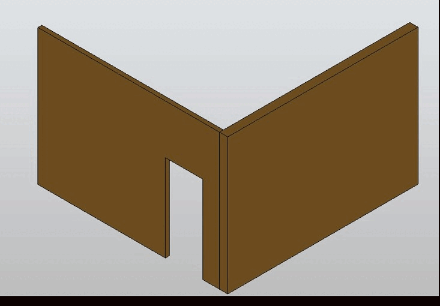
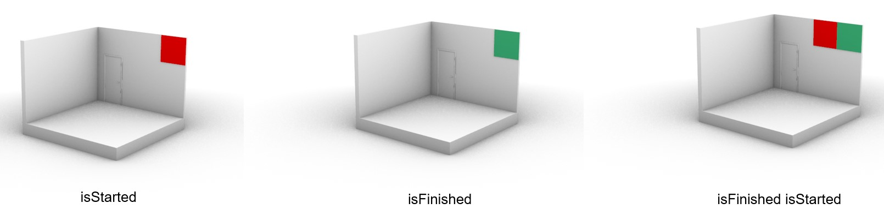
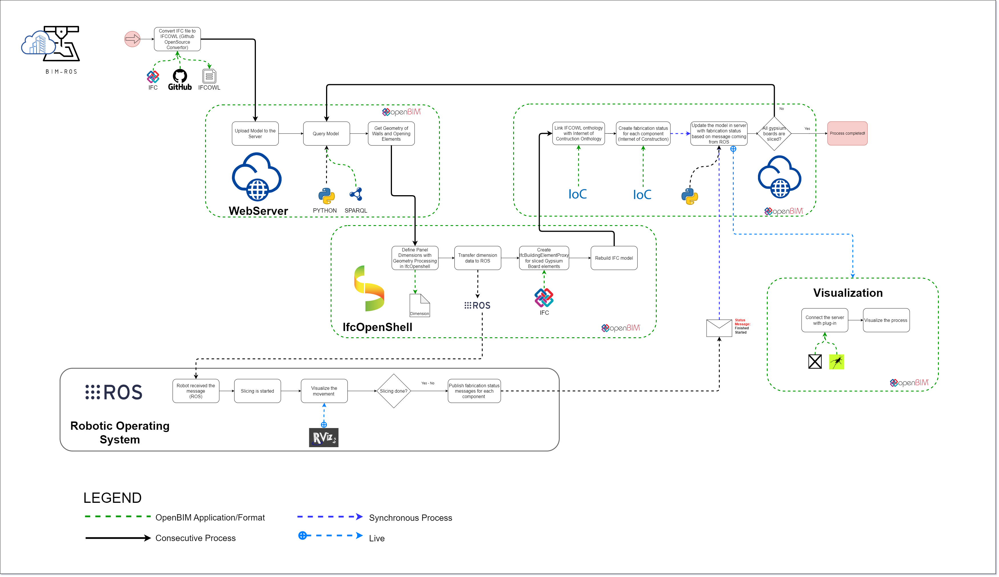

This project is conducted as part of Construction and Robotics Master's program | RWTH Aachen, with the supervision of Davide Picchi and Lukas Kirner, and the contribution of Elif Akbas & Cemre Karaoglan Yazici
BIM ROS Integration

Geometry Processing with IfcOpenshell
The package currently pulls the geometry of wall objects (including opening elements inherited from window and door objects) from the WebServer and then panelizes them according to the standard gypsum board dimensions using Python OpenCascade (PyOCC) library. The resulting panel geometry dimensions are then published to the ROS environment as a message to start the cutting process accordingly.
Machinery Simulation with ROS Rvitz
The robot's movement is simulated and visualized using RVIZ. As the gypsum boards are cut, ROS publishes messages regarding the fabrication process, including whether the process has not started, started, or finished. The resulting panel geometry is subsequently pushed back to the server as an IfcBuildingElementProxy, and the panels are labeled with their fabrication status.
Process Visualization with Rhino Grasshopper
Grasshopper | Real-time data visualization of '#ProcessStatus', an entity within the Internet of Construction Ontology, is achieved through SPARQL queries to a server with Grasshopper plug-ın.
.png)
.jpg)